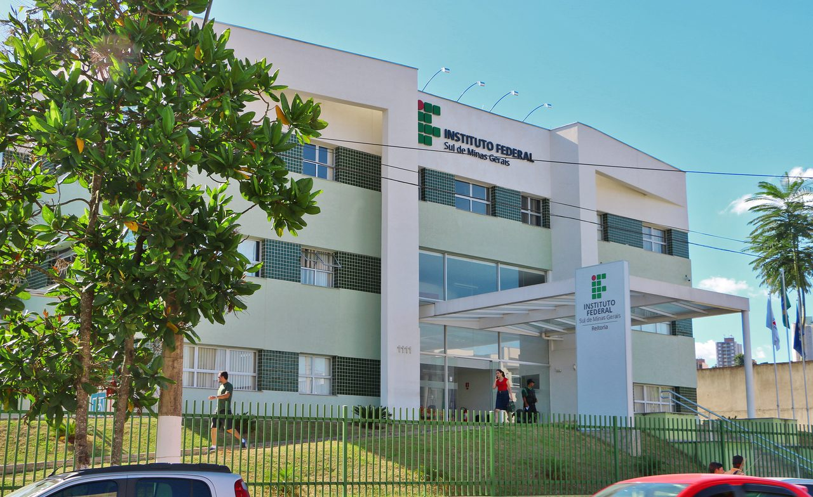
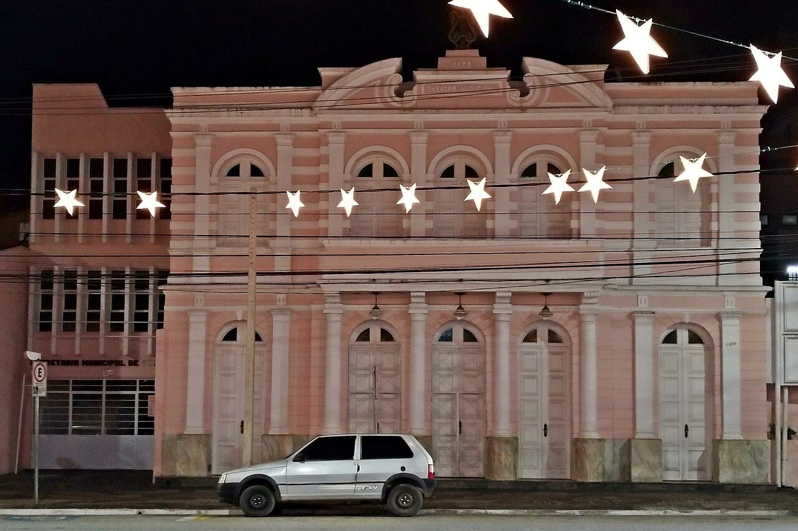

Em estruturação com a metodologia ELI do Sebrae Minas
Pouso Alegre ligando os pontos da inovação
O Ecossistema Local de Inovação reúne empresas, comércio e indústrias, universidades e ICTs, setor público e sociedade civil organizada para planejar juntos o futuro da inovação na cidade. Este site é o ponto de encontro do ELI enquanto ele ganha forma.

O que é um Ecossistema Local de Inovação
Olhe para o símbolo do ELI: cada ponto colorido é um ator (uma universidade, uma startup, a prefeitura, uma associação). Cada linha é uma conexão entre eles. Um ecossistema forte não é o que tem mais pontos, é o que tem mais linhas.
A metodologia ELI foi criada pelo Sebrae Paraná com a Fundação CERTI e levada para todo o país pelo Sebrae em 2020. Ela olha a cidade por vertentes, mede a maturidade de cada uma e transforma o diagnóstico num plano de ação com responsáveis. Em Pouso Alegre, a condução é da consultoria do Sebrae Minas.
As vertentes que a metodologia observa
- Ambientes de inovaçãoIncubadoras, aceleradoras, coworkings, espaços maker, centros de inovação, parques tecnológicos.
- Programas e açõesHackathons, editais, capacitações, mentorias, eventos que movimentam a rede.
- ICTIsInstituições de ciência, tecnologia e inovação: universidades, institutos, centros de pesquisa.
- Políticas públicasLeis, conselhos, fundos e programas municipais de inovação.
- CapitalInvestidores-anjo, fundos, crédito, editais de fomento.
- GovernançaQuem decide, como decide e como mantém o plano andando.
Em que etapa estamos
A metodologia segue uma sequência. Pouso Alegre está no começo, com os grupos de trabalho já formados.
- 1CaracterizaçãoQuem são os atores, o que já existe, quais setores puxam a economia.Estamos aqui
- 2MaturidadeMedir o quanto cada vertente já está desenvolvida.
- 3Pontos de intervençãoEscolher onde agir primeiro.
- 4Plano de intervençãoAções com dono, prazo e indicador.
- 5Atuação conjuntaOs atores executando o plano juntos.
- 6MonitoramentoAcompanhar, corrigir a rota e prestar contas.
Como nos organizamos
Três grupos de trabalho, cada um cuidando de vertentes da metodologia, e um Grupo de Governança com um representante de cada grupo.
A composição de cada grupo está em formação. Quer participar? Fale com a liderança do grupo pela governança do ELI.

Uma cidade com conhecimento instalado
Pouso Alegre tem 152.212 habitantes (Censo 2022), é a segunda maior cidade do Sul de Minas e fica entre São Paulo e Belo Horizonte. Abriga a reitoria de um instituto federal, um campus de universidade federal, universidades e centros universitários, indústria forte e uma comunidade de startups em crescimento.
O ELI existe para que tudo isso trabalhe junto: que o estudante encontre o laboratório, que o laboratório encontre a empresa e que a empresa encontre o investidor.
Referências que nos inspiram
Não precisamos inventar tudo. Estes ecossistemas resolveram problemas parecidos com os nossos.
Próximos na agenda
Ver agenda completa
Projeto estruturante do Grupo 2: Ambientes de Inovação e Programas e Ações
Agenda Única da Inovação
Um só calendário para todos os eventos, editais, capacitações e encontros de inovação e empreendedorismo de Pouso Alegre. Como o painel de uma rodoviária: todo mundo olha o mesmo quadro e ninguém marca dois grandes eventos no mesmo horário.
Theatro Municipal de Pouso Alegre. Foto: HVL, CC BY 4.0
Como a agenda funciona
- 1Você cadastraQualquer organizador preenche o formulário abaixo. Leva três minutos.
- 2O Grupo 2 confereVerificamos os dados e avisamos se houver outro evento grande na mesma data.
- 3O evento entra na agendaPublicado com o selo "Na agenda ELI" e divulgado pelos canais dos parceiros.
Combinados propostos pelo Grupo 2
- Evento de inovação, tecnologia ou empreendedorismo aberto ao público entra na agenda, seja de qualquer instituição.
- Cadastro com pelo menos 15 dias de antecedência, para dar tempo de divulgar e evitar choques de data.
- Os parceiros do ELI divulgam juntos o que está na agenda. O que não está, cada um divulga por conta própria.
- Contatos pessoais de quem cadastra não são publicados.
Cadastrar evento ou ação
Preencha os dados do evento. Ao escolher a data, o radar mostra se já existe algo marcado para o mesmo dia.
Escolha uma data para ver o radar.
Grupo 2: Ambientes de Inovação e Programas e Ações
Nossa missão é saber o que existe, conectar e preencher as lacunas nos ambientes de inovação e nos programas de Pouso Alegre. Trabalhamos em três frentes:
- Ambientes
- Inventário de cada espaço de inovação: quem gere, o que oferece, para quem.
- Programas e ações
- Catálogo dos programas recorrentes: hackathons, editais, mentorias, capacitações.
- Projetos estruturantes
- Obras que beneficiam todo o ecossistema. A Agenda Única é a primeira.
O que vamos medir
- 0eventos na agenda
- 0organizadores diferentes
- 0datas com mais de um evento
Contadores calculados a partir da agenda, incluindo os eventos já realizados.
Quem faz parte
O Ecossistema é feito por todos e para todos.
Venha fazer parte.
Qualquer instituição, empresa ou pessoa que movimenta a inovação em Pouso Alegre pode contribuir com o Grupo 2. O primeiro passo é colocar seus eventos na Agenda Única.
Instituições que já participam

Proposta inicial para validação do Grupo de Governança
Quem somos e como decidimos
O ELI Pouso Alegre não é uma nova instituição. É um acordo de trabalho entre instituições que já existem, para que façam juntas o que nenhuma faria sozinha.
Centro de Pouso Alegre. Foto: Madu Macedo, CC BY-SA 4.0
Sobre nós
O Ecossistema Local de Inovação de Pouso Alegre começou a se organizar em 2026, com a metodologia ELI conduzida pela consultoria do Sebrae Minas. Reúne representantes do setor público, das instituições de ensino e pesquisa, das associações empresariais, de ambientes de inovação e de empresas da cidade.
Trabalhamos em três grupos temáticos e uma governança enxuta. O objetivo desta primeira fase é conhecer bem o ecossistema, escolher prioridades e entregar projetos que todos possam ver funcionando, como a Agenda Única.
Visão
Ser, até 2030, o ecossistema de inovação mais conectado do Sul de Minas: um lugar onde qualquer pessoa com uma ideia sabe a quem recorrer.
Missão
Conectar pessoas, instituições e recursos de Pouso Alegre para transformar conhecimento em negócios, empregos e qualidade de vida.
Princípios
- Toda ação tem dono e prazoCada iniciativa do plano tem um guardião, uma data e um indicador. Aprendido com o plano do ELI de Pato Branco.
- Portas abertasQualquer instituição ou pessoa que queira contribuir encontra um caminho para participar.
- Longo prazo, além de mandatosO ELI atravessa gestões públicas e diretorias. Maringá planeja assim desde 1996.
- Fazer junto antes de fazer novoPrimeiro conectar o que já existe, depois criar o que falta.
- Ritmo constanteEncontros regulares valem mais que um grande evento isolado.
- TransparênciaDecisões, atas e indicadores ficam públicos neste site.
Estrutura
| Instância | Quem compõe | O que faz | Ritmo |
|---|---|---|---|
| Grupo de Governança | Um representante de cada grupo de trabalho | Define prioridades, aprova o plano, resolve impasses e presta contas | Mensal |
| Grupos de trabalho | Instituições ligadas às vertentes de cada grupo | Executam as ações, cada uma com guardião, prazo e indicador | Quinzenal ou mensal |
| Consultoria Sebrae Minas | Equipe do programa ELI | Conduz a metodologia, o diagnóstico e o plano de intervenção | Conforme o cronograma |
| Secretaria executiva proposta | Uma instituição parceira, em rodízio | Atas, agenda, site e comunicação. Garante que a governança não vire só reunião | Contínuo |
| Plenária aberta proposta | Todos os atores do ecossistema | Prestação de contas e lançamento da agenda do período | Trimestral |
Como decidimos
- Buscamos consenso. Sem consenso, decide a maioria simples do Grupo de Governança.
- Toda decisão vira registro em ata, publicada neste site.
- Cada grupo tem autonomia para executar o que já foi aprovado no plano.
- Conflito de interesse se declara antes da discussão, não depois.
Quando alguém sai
- Representações têm mandato de um ano, renovável.
- Quem sai entrega a pasta: contatos, pendências e próximos passos, numa reunião de passagem.
- A instituição indica o substituto em até 30 dias.
Estas regras respondem a um risco que outros ecossistemas já viveram: a troca de pessoas apagar a memória do trabalho.
Primeiros 90 dias proposta
- Dezembro de 2026Validar a baseGovernança aprova visão, missão, princípios e estas regras. Formulário da agenda aberto aos organizadores.
- Janeiro de 2027Primeira agenda trimestralAgenda de fevereiro a abril publicada. Inventário dos ambientes de inovação iniciado.
- Fevereiro a março de 2027Plenária abertaApresentação do diagnóstico, dos grupos e dos primeiros indicadores para todo o ecossistema.